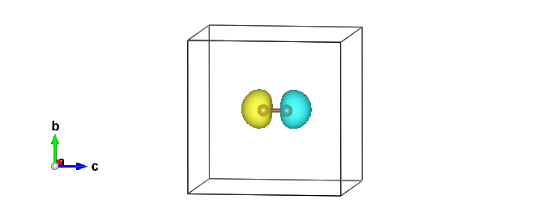

A challenging case: the spin-singlet carbon dimer with various ansätze
00 Introduction
In this tutorial, you will compute all-electron VMC and LRDMC energies for the C2 dimer using several wave-function ansätze:
JDFT — a Jastrow–Slater determinant with frozen DFT orbitals,
JSD — a Jastrow–Slater determinant with optimized molecular orbitals,
JsAGPs — a Jastrow–AGP with a spin-independent Jastrow factor,
JAGPu — a Jastrow–AGP with a spin-dependent Jastrow factor, and
JAGP (the most general ansatz) — a Jastrow–AGP including both singlet and triplet pair correlations (often referred to as a Jastrow–Pfaffian ansatz).
All input and output files for this tutorial can be downloaded here.
- C2 dimer
Ebond = 6.44 eV = 148.508 kcal/mol = 0.236 Ha, J. Chem. Theory Comput. 16, 6114-6131 (2020)
dC-C = 2.3481 bohr, J. Chem. Phys. 128, 174101 (2008)
Warning
In this tutorial, dC-C = 2.300 bohr is used just for simplicity. So, please change it if you need a more accurate result.
01 C2 dimer and C atom - JDFT ansatz
01-01 Preparing a trial wave function
C2 dimer
Download C2 dimer structure C2.xyz.
2
C2-dimer xyz file
C 0.0000 0.0000 -0.60855355000000000000
C 0.0000 0.0000 0.60855355000000000000
Prepare an input file makefort10.input for generating a wavefunction template.
cd 01JDFT/01C2_dimer/01trial_wavefunction/00makefort10
turbogenius makefort10 -g -str C2.xyz -detbasis vtz -jasbasis vdz -pp BFD
C atom
Download C atom structure C.xyz.
1
C atom xyz file
C 0.0000 0.0000 0.0000
Prepare an input file makefort10.input for generating a wavefunction template.
cd 01JDFT/02C_atom/01trial_wavefunction/00makefort10
turbogenius makefort10 -g -str C.xyz -detbasis vtz -jasbasis vdz -pp BFD -neldiff 2
01-02 Generating a JAGPs template
One can generate a JAGPs template using the prepared makefort10.input by typing:
turbogenius makefort10 -r # ``-r`` for running calculations
turbogenius makefort10 -post # ``-post`` for post-analysis or cleanup
or
turbogenius makefort10 -r -post
01-03 Generating a Pseudo potential file
The pseudo potential file has been automatically generated by turbogenius and stored by the name pseudo.dat. The content looks as follows:
ECP
1 1.870000 2
1 3
22.551642 2.000000 5.029916
4.000000 1.000000 8.359738
33.438953 3.000000 4.483619
-19.175373 2.000000 3.938313
2 1.870000 2
1 3
22.551642 2.000000 5.029916
4.000000 1.000000 8.359738
33.438953 3.000000 4.483619
-19.175373 2.000000 3.938313
01-04 Adding molecular orbitals to the JAGPs template
One should convert the generated JAGPs template to Jastrow Slater Determinant (JSD) one to prepare a trial wavefunction using DFT. This can be done using the convertfort10 module. Generate an input file for convertfort10mol using:
mv fort.10 fort.10_in
turbogenius convertfort10mol -g
After preparing convertfort10mol.input, run the calculation by typing the following commands to covert fort.10_in (JAGPs) to fort.10_new (JSD) by:
turbogenius convertfort10mol -r
turbogenius convertfort10mol -post
01-05 Run DFT
As written above, the coefficients of the molecular orbitals generated by convertfort10mol.x are random. Therefore, the next step is to optimize the coefficients using a build-in DFT code, called prep.x. This is done by using the prep module of Turbo-Genius.
Move to a work directory:
cd ../01DFT
Next, copy the prepared fort.10 and pseudo.dat to 01DFT directory:
cp ../00makefort10/fort.10 .
cp ../00makefort10/pseudo.dat .
To generate an input file for a DFT calculation type the following command:
- C2 dimer
turbogenius prep -g -grid 0.10 0.10 0.10 -lbox 12.0 12.0 14.0
- C atom
turbogenius prep -g -grid 0.10 0.10 0.10 -lbox 12.0 12.0 12.0
Note
In the generated prep.input file, set nelocc to 4. The occupation of the orbitals is specified at the end of the input file (2 in this case, indicating paired electrons)
Launch the DFT job.
export TURBOPREP_RUN_COMMAND="mpirun -np 4 prep-mpi.x"
turbogenius prep -r
See Note in the optimization step in 01Hydrogen_dimer for the ways to run the calculations.
Run the postprocess by typing:
turbogenius prep -post
and check the convergence:
% grep Iter out_prep
Iter,E,xc,corr 1 -13.1203443 -3.6300842 -0.4666827 19.4803860
Iter,E,xc,corr 2 -11.9869924 -2.0332673 -0.3526467 1.1333519
Iter,E,xc,corr 3 -11.2327951 -2.3881088 -0.3788108 0.7541973
Iter,E,xc,corr 4 -20.6331707 -1.9842066 -0.4019725 9.4003755
Iter,E,xc,corr 5 -11.3440293 -2.3325513 -0.3733283 9.2891413
Iter,E,xc,corr 6 -11.0026202 -2.6778705 -0.4050588 0.3414091
Iter,E,xc,corr 7 -11.0245545 -2.5463056 -0.3964621 0.0219343
Iter,E,xc,corr 8 -10.9915229 -2.6421696 -0.4050391 0.0330315
Iter,E,xc,corr 9 -10.9894860 -2.6702884 -0.4084529 0.0020369
Iter,E,xc,corr 10 -10.9899084 -2.6757655 -0.4102938 0.0004223
# Iterations = 10
01-06 Jastrow factor optimization (WF=JDFT)
One should refer to the Hydrogen tutorial for the details. Here, only the commands are shown.
First, copy the wavefunction file and the pseudopotential file from the previous step:
cd ../../02optimization/
cp ../01trial_wavefunction/01DFT/fort.10_new fort.10
cp ../01trial_wavefunction/01DFT/pseudo.dat .
cp fort.10 fort.10_dft
Then, prepare an input file for the optimization:
turbogenius vmcopt -g -opt_onebody -opt_twobody -opt_jas_mat -optimizer lr -vmcoptsteps 400 -steps 1000 -nw 128
Run the optimization jobs:
export TURBOVMC_RUN_COMMAND="mpirun -np 16 turborvb-mpi.x"
turbogenius vmcopt -r
See Note in the optimization step in 01Hydrogen_dimer for the ways to run the calculations.
Perform the postprocess and check the convergence:
turbogenius vmcopt -post -optwarmup 80 -plot
01-07 VMC (WF=JDFT)
Please refer to the Hydrogen tutorial for the details. Here, only needed commands are shown.
First, copy the wavefunction file and the pseudopotential file from the previous step:
cd ../03vmc/
cp ../02optimization/fort.10 .
cp ../02optimization/pseudo.dat .
Then, prepare an input file for the VMC calculation:
turbogenius vmc -g -steps 10000 -nw 128
and edit the generated input file datasvmc.input as needed.
Run the optimization jobs.
export TURBOVMC_RUN_COMMAND="mpirun -np 16 turborvb-mpi.x"
turbogenius vmcopt -r
See Note in the optimization step in 01Hydrogen_dimer for the ways to run the calculations.
Perform the postprocess by typing:
turbogenius vmc -post -bin 10 -warmup 5
Check the output file pip0.d. You may obtain like:
- C2 dimer
number of bins read = 996 Energy = -11.0221801195572 2.314058967237164E-004 Variance square = 0.225404174390588 6.661308870842383E-004 Est. energy error bar = 2.326984685231173E-004 5.429092343987092E-006 Est. corr. time = 1.53214388283156 7.133083209261912E-002
- C atom
number of bins read = 999 Energy = -5.40965078208914 1.502837476823764E-004 Variance square = 8.609101949646993E-002 3.231616256487902E-004 Est. energy error bar = 1.528893139652585E-004 3.472140401553639E-006 Est. corr. time = 1.73685872518992 7.845390460943868E-002
01-08 LRDMC (WF=JDFT)
One should refer to the Hydrogen tutorial for the details. Here, only needed explanations and commands are shown.
Run LRDMC jobs for each alat.
First, copy the wavefunction and pseudopotential files to a work directory, e.g. alat_0.10 for alat=0.10.
cd ../04lrdmc/alat_0.10/
cp ../../03vmc/fort.10 .
cp ../../03vmc/pseudo.dat .
Second, generate an input file datasfn.input for LRDMC calculation.
- C2 dimer
turbogenius lrdmc -g -etry -11.00 -alat -0.10
- C atom
turbogenius lrdmc -g -etry -5.00 -alat -0.10
Third, run the LRDMC calculation.
TURBOVMC_RUN_COMMAND="mpirun -np 16 turborvb-mpi.x"
turbogenius lrdmc -r
See Note in the optimization step in 01Hydrogen_dimer for the ways to run the calculations.
Finally, perform the postprocess, and find the energy value in pip0_fn.d.
turbogenius lrdmc -post -bin 20 -corr 3 -warmup 5
Repeat the procedure above for a series of alat values, and collect the energy values in a file evsa.gnu. A shell script to run these steps and perform extrapolation will be given as follows:
alat_list="0.10 0.20 0.30 0.40"
lrdmc_root_dir=`pwd`
num=0
echo -n > ${lrdmc_root_dir}/evsa.gnu
for alat in $alat_list
do
cd alat_${alat}
cp ../../03vmc/fort.10 .
cp ../../03vmc/pseudo.dat .
turbogenius lrdmc -g -etry -11.00 -alat -${alat} # for C2 dimer
# turbogenius lrdmc -g -etry -5.00 -alat -${alat} # for C atom
export TURBOVMC_RUN_COMMAND="mpirun -np 16 turborvb-mpi.x"
turbogenius lrdmc -r
turbogenius lrdmc -post -bin 20 -corr 3 -warmup 5
num=`expr ${num} + 1`
echo -n "${alat} " >> ${lrdmc_root_dir}/evsa.gnu
grep "Energy =" pip0_fn.d | awk '{print $3, $4}' >> ${lrdmc_root_dir}/evsa.gnu
cd ${lrdmc_root_dir}
done
# quartic fit
sed "1i 2 ${num} 4 1" evsa.gnu > evsa_quad.in
funvsa.x < evsa_quad.in > evsa_quad.out
# linear fit
sed "1i 1 ${num} 4 1" evsa.gnu > evsa_lin.in
funvsa.x < evsa_lin.in > evsa_lin.out
The result can be shown by e.g. using gnuplot.
gnuplot
p "evsa.gnu" u 1:2:3 with yerr
It performs curve fitting for energies vs alat, which is then used for extrapolation. While running turbo-genius asks for the degree of polynomial to be used for curve fitting. The result of fitting is written to the file evsa_quad.out for the quadratic fit, and evsa_lin.out for the linear fit.
For quartic fitting i.e. \(E(a)=E(0) + k_{1} \cdot a^2 + k_{2} \cdot a^4\), the results are like:
# C2 dimer
% cat evsa_quad.out
Reduced chi^2 = 3.24139195024559
Coefficient found
1 -11.0529822174764 1.886835280808058E-004 <- E_0
2 -3.752828455181791E-003 3.868657694133935E-003 <- k_1
3 -2.343738962778753E-002 1.487080872118977E-002 <- k_2
For quadratic fitting i.e. \(E(a)=E(0) + k_{1} \cdot a^2\), the results are like:
# C atom
% cat evsa_lin.out
Reduced chi^2 = 3.22600367069279
Coefficient found
1 -5.42188811770239 1.033538868667457E-004 <- E_0
2 -3.493534258715859E-003 7.118635862498798E-004 <- k_1
Finally:
C2 dimer
VMC(JDFT) = -11.02218(23) Ha
LRDMC(JDFT) = -11.05298(19) Ha
C atom
VMC(JDFT) = -5.40965(15) Ha
LRDMC(JDFT) = -5.42189(10) Ha
Binding energy
Ebond = 0.2028(3) Ha = 5.51(8) eV (VMC-JDFT)
Ebond = 5.656(3) eV (DMC-JDFT) (J. Chem. Phys. 2008, 128, 174101 ).
Ebond = 0.2092(2) Ha = 5.69(5) eV (LRDMC-JDFT)
Ebond = 0.236 Ha = 6.44 eV (Experiment)
02 C2 dimer and C atom - JsAGPs ansatz
02-01 Conversion of WF (WF=JsAGPs)
The procedure is the almost same as in the Hydrogen-dimer tutorial.
Three hybrid-orbitals (nhyb=4) were employed here.
Please refer to the Hydrogen tutorial for the details.
C2 dimer
First, move to a directory 03JsAGPs/01C2_dimer/01convert_WF_JSD_to_JAGP,
and copy fort.10 and pseudo.dat in VMC directory of JDFT ansatz to the work directory:
cd ../../../03JsAGPs/01C2_dimer/01convert_WF_JSD_to_JAGP/
cp ../../../01JDFT/01C2_dimer/03vmc/fort.10 .
cp ../../../01JDFT/01C2_dimer/03vmc/pseudo.dat .
Then, convert the wavefunction to JsAGPs ansatz, with adding hybrid orbitals.
turbogenius convertwf -to agps -nosym -hyb 4 4
# add hybrid orbitals 4 4 for the first and the second C atoms
Check the overlap square in out_conv:
% grep Overlap out_conv
....
Overlap square with no zero 0.9999....
Overlap square should be close to unity, i.e. if the conversion is perfect, this becomes unity.
We recommend you to check if the above conversion is successful. This can be checked using the so-called correlated sampling method. Indeed, one can check the difference in energies of wavefunctions using a VMC claculation.
Prepare the obtained JsAGPs wavefunction fort.10, and copy the optimized JDFT wavefunction fort.10_in as fort.10_corr:
cp fort.10_bak ./fort.10_corr
Prepare input files by typing:
turbogenius correlated-sampling -g
datasvmc.input for a vmc calculation, and readforward.input for a correlated sampling are generated.
Now run the calculation by typing:
export TURBOVMC_RUN_COMMAND="mpirun -np 16 turborvb-mpi.x"
export TURBOREADFORWARD_RUN_COMMAND="mpirun -np 16 readforward-mpi.x"
turbogenius correlated-sampling -r
Note
If you prefer to run the TurboRVB commands manually:
turborvb-serial.x < datasvmc.input > out_vmc
readforward-serial.x < readforward.input > out_readforward
or call their MPI versions to carry out parallel execution.
The results will be written in corrsampling.dat:
%cat corrsampling.dat
Number of bins 10
reference energy: E(fort.10) -0.110045875E+02 0.252368934E-01
reweighted energy: E(fort.10_corr) -0.110045875E+02 0.252368985E-01
reweighted difference: E(fort.10)-E(fort.10_corr) -0.148834687E-07 0.316227766E-07
Overlap square : (fort.10,fort.10_corr) 0.999999998E+00 0.316227766E-07
C atom
The conversion procedure is a bit complicated for the C atom.
First, move to a directory 03JsAGPs/02C_atom/01_01convert_WF_JSD_to_JAGP,
and copy fort.10 and pseudo.dat in VMC directory of JDFT ansatz to the work directory:
# C atom/copy wfs
cd ../../../03JsAGPs/02C_atom/01_01convert_WF_JSD_to_JAGP/
cp ../../../01JDFT/02C_atom/03vmc/fort.10 ./fort.10
cp ../../../01JDFT/02C_atom/03vmc/pseudo.dat .
Then, convert the wavefunction to JsAGPs ansatz. Note that the hybrid orbitals will not be added at this stage.
turbogenius convertwf -to agps -nosym
# hybrid orbitals are added later. See below
Check out_conv to see if Overlap square is close to unity:
% grep Overlap out_conv
....
Overlap square with no zero 0.9999....
Check if the conversion is successful by using the correlated sampling method.
cp fort.10_bak ./fort.10_corr
turbogenius correlated-sampling -g
export TURBOVMC_RUN_COMMAND="mpirun -np 16 turborvb-mpi.x"
export TURBOREADFORWARD_RUN_COMMAND="mpirun -np 16 readforward-mpi.x"
turbogenius correlated-sampling -r
The results will be written in corrsampling.dat:
%cat corrsampling.dat
Number of bins 10
reference energy: E(fort.10) -0.110045875E+02 0.252368934E-01
reweighted energy: E(fort.10_corr) -0.110045875E+02 0.252368985E-01
reweighted difference: E(fort.10)-E(fort.10_corr) -0.148834687E-07 0.316227766E-07
Overlap square : (fort.10,fort.10_corr) 0.999999998E+00 0.316227766E-07
Next, you should optimize the matrix elements before adding hybrid orbitals.
First, copy fort.10 and pseudo.dat to a work directory:
cd ../01_02optimization/
cp ../01_01convert_WF_JSD_to_JAGP/fort.10 .
cp ../01_01convert_WF_JSD_to_JAGP/pseudo.dat .
Then, run the VMC optimization:
turbogenius vmcopt -g -opt_onebody -opt_twobody -opt_jas_mat -opt_det_mat -optimizer lr -vmcsteps 600 -steps 400 -nw 128
export TURBOVMC_RUN_COMMAND="mpirun -np 16 turborvb-mpi.x"
turbogenius vmcopt -r
turbogenius vmcopt -post -optwarmup 80 -plot
Finally, you can convert the optimized WF to the JAGP one with -hyb 4.
cd ../01_03convert_WF_JDF_to_JAGP/
cp ../01_02optimization/fort.10 .
cp ../01_02optimization/pseudo.dat .
#conversion with 4 hybrid orbitals
turbogenius convertwf -to agps -nosym -hyb 4
Please check if the largest eigenvalues are non zero that were zero before the optimization.
% cat out_conv
...
41 0.359417387280524595E-01
42 0.472612394607655972 <- here
43 50.2735591956323731 <- here
44 52.3040643927227791 <- here
45 52.4454593457030782 <- here
dimension = 45 4
dimension = 45 4
dimension = 45 4
dimension = 45 4
Please check the energy difference by the correlated sampling.
# correlated sampling
cp fort.10_bak ./fort.10_corr
turbogenius correlated-sampling -g
export TURBOVMC_RUN_COMMAND="mpirun -np 16 turborvb-mpi.x"
export TURBOREADFORWARD_RUN_COMMAND="mpirun -np 16 readforward-mpi.x"
turbogenius correlated-sampling -r
cat corrsampling.dat
02-02 VMC-optimization (WF=JsAGPs)
Please refer to the Hydrogen tutorial for the details. Here, only the commands are shown.
First, copy the wavefunction and pseudopotential files from the previous step:
- C2 dimer
cd ../02optimization/ cp ../01convert_WF_JSD_to_JAGP/fort.10 . cp ../01convert_WF_JSD_to_JAGP/pseudo.dat . cp fort.10 fort.10_jdft
- C atom
cd ../02optimization/ cp ../01_03convert_WF_JSD_to_JAGP/fort.10 . cp ../01_03convert_WF_JSD_to_JAGP/pseudo.dat . cp fort.10 fort.10_jdft
Second, prepare an input file for optimization: (add options for the number of steps and other parmeters appropriately)
turbogenius vmcopt -g -opt_onebody -opt_twobody -opt_jas_mat -opt_det_mat -optimizer lr -vmcoptsteps 400 -steps 400 -nw 128
Run an optimization job.
export TURBOVMC_RUN_COMMAND="mpirun -np 16 turborvb-mpi.x"
turbogenius vmcopt -r
Check the convergence:
turbogenius vmcopt -post -optwarmup 80 -plot
and then follow the instructions for tuning the optimization.
02-03 VMC (WF=JsAGPs)
Please refer to the Hydrogen tutorial for the details. Here, only needed commands are shown.
Copy the optimized wavefunction as well as pseudopotential from the previous step:
cd ../03vmc
cp ../02optimization/fort.10 .
cp ../02optimization/pseudo.dat .
Then, prepare an input file for a VMC calculation:
turbogenius vmc -g -steps 10000 -nw 128
Run the VMC calculation:
export TURBOVMC_RUN_COMMAND="mpirun -np 16 turborvb-mpi.x"
turbogenius vmc -r
Perform the postprocess:
turbogenius vmc -post -bin 20 -warmup 5
You may obtain:
- C2 dimer
% cat pip0.d number of bins read = 499 Energy = -11.0561023752813 2.657081737992969E-004 Variance square = 0.167151337506581 2.487175392299656E-003 Est. energy error bar = 2.667881948465201E-004 9.740755305129974E-006 Est. corr. time = 1.36165378936245 9.657211844194399E-002
- C atom
% cat pip0.d number of bins read = 499 Energy = -5.42023281231657 1.747843070690741E-004 Variance square = 6.151263349430580E-002 2.812473020121101E-004 Est. energy error bar = 1.823230486819808E-004 5.739947472392408E-006 Est. corr. time = 1.72750276011311 0.107600086165112
02-04 LRDMC (WF=JsAGPs)
Please refer to the Hydrogen tutorial for the details. Here, only the commands are shown.
We will perform LRDMC calculations at several lattice spacings alat, and estimate an unbiased energy at alat\(\to 0\). For an example, we choose alat=0.20 in the following. First, copy the wavefunction and pseudopotential files to a work directory:
cd ../04lrdmc/alat_0.20/
cp ../../03vmc/fort.10 .
cp ../../03vmc/pseudo.dat .
Second, generate an input file:
- C2 dimer
turbogenius lrdmc -g -etry -11.00 -alat -0.20
- C atom
turbogenius lrdmc -g -etry -5.00 -alat -0.20
Then, run the LRDMC calculation:
export TURBOVMC_RUN_COMMAND="mpirun -np 16 turborvb-mpi.x"
turbogenius lrdmc -r
Finally, perform the postprocess:
turbogenius lrdmc -post -bin 20 -corr 3 -warmup 5
These steps are repeated for several values of alat. A shell script to do the calculation and extrapolation will be given as follows:
alat_list="0.10 0.20 0.30 0.40"
lrdmc_root_dir=`pwd`
num=0
echo -n > ${lrdmc_root_dir}/evsa.gnu
for alat in $alat_list
do
cd alat_${alat}
cp ../../03vmc/fort.10 .
cp ../../03vmc/pseudo.dat .
turbogenius lrdmc -g -etry -11.00 -alat -${alat} # for C2 dimer
# turbogenius lrdmc -g -etry -5.00 -alat -${alat} # for C atom
export TURBOVMC_RUN_COMMAND="mpirun -np 16 turborvb-mpi.x"
turbogenius lrdmc -r
turbogenius lrdmc -post -bin 20 -corr 3 -warmup 5
num=`expr ${num} + 1`
echo -n "${alat} " >> ${lrdmc_root_dir}/evsa.gnu
grep "Energy =" pip0_fn.d | awk '{print $3, $4}' >> ${lrdmc_root_dir}/evsa.gnu
cd ${lrdmc_root_dir}
done
# quartic fit
sed "1i 2 ${num} 4 1" evsa.gnu > evsa.in
funvsa.x < evsa.in > evsa_quad.out
# linear fit
sed "1i 1 ${num} 4 1" evsa.gnu > evsa.in
funvsa.x < evsa.in > evsa_lin.out
To view the results, use e.g. gnuplot:
gnuplot
p "evsa.gnu" u 1:2:3 with yerr
The results of the linear fit are like as follows:
- C2 dimer
Reduced chi^2 = 0.211949768672111 Coefficient found 1 -11.0749244254452 1.269668477442219E-004 2 -5.572540169827904E-003 8.734350696222097E-004- C atom
Reduced chi^2 = 1.48922837922392 Coefficient found 1 -5.42734029684322 8.031603687503355E-005 2 -1.750555796426137E-003 5.639930126170355E-004
Finally:
C2 dimer
VMC(JsAGPs) = -11.05610(27) Ha
LRDMC(JsAGPs) = -11.07492(13) Ha
C atom
VMC(JsAGPs) = -5.4202(17) Ha
LRDMC(JsAGPs) = -5.42734(8) Ha
Binding energy
Ebond = 0.2028(3) Ha = 5.519(8) eV (VMC-JDFT)
Ebond = 0.2157(4)Ha = 5.870(10) eV (VMC-JsAGPs)
Ebond = 5.656(3) eV (DMC-JDFT) (J. Chem. Phys. 2008, 128, 174101 ).
Ebond = 0.2092(2) Ha = 5.693(5) eV (LRDMC-JDFT)
Ebond = 0.2202(2)Ha = 5.993(5)eV (LRDMC-JsAGPs)
Ebond = 0.236 Ha = 6.44 eV (Experiment)
03 C2 dimer and C atom - JAGPu ansatz
03-01 prepration of a wave function
You can convert the JAGPs WF to the JAGPu WF by the following steps.
C2 dimer
First, copy fort.10 and pseudo.dat of the JsAGPs ansatz to a work directory:
cd ../../../04JAGPu/01C2_dimer/01trial_wavefunction/01DFT/
cp ../../../../03JsAGPs/01C2_dimer/03vmc/fort.10 .
cp ../../../../03JsAGPs/01C2_dimer/03vmc/pseudo.dat .
Then, convert the wavefunction and add molecular orbitals:
turbogenius convertwf -to agpu -nosym
# add molecular orbital (i.e., JAGPu -> JSD)
turbogenius convertwf -to sd
C atom
First, copy fort.10 and pseudo.dat of the JsAGPs ansatz to a work directory:
cd ../../../04JAGPu/02C_atom/01trial_wavefunction/01DFT/
cp ../../../../03JsAGPs/02C_atom/03vmc/fort.10 .
cp ../../../../03JsAGPs/02C_atom/03vmc/pseudo.dat .
Then, convert the wavefunction and add molecular orbital:
turbogenius convertwf -to agpu -nosym
# add molecular orbital (i.e., JAGPu -> JSD)
turbogenius convertwf -to sd
03-02 Generate a trial wave function using DFT with a magnetic moment
The next step is to prepare a trial wave function using the built-in DFT code. Here you can set magnetic moments on each atom to obtain an AFM initial state.
- C2 dimer
cd ../01DFT turbogenius prep -g -xc lsda -f 0.01 -grid 0.10 0.10 0.10 -lbox 12.0 12.0 14.0 -m u d
- C atom
cd ../01DFT turbogenius prep -g -xc lsda -f 0.01 -grid 0.10 0.10 0.10 -lbox 12.0 12.0 12.0 -m u
Then, you can run DFT by typing:
export TURBOPREP_RUN_COMMAND="mpirun -np 16 turborvb-mpi.x"
turbogenius prep -r
followed by the postprocess:
turbogenius prep -post
03-03 Check local magnetic moments (C2 dimer)
You can check the obtained magnetic moments by using plot_orbitals.x .
First, copy fort.10:
cd ../02check_magnetization
cp ../01DFT/fort.10_new fort.10
cp ../01DFT/pseudo.dat .
Then, plot the spin density:
plot_orbitals.x
and type in for the prompts as follows:
Number of molecular orbitals : 6
Choose box size (x,y,z)
15 15 15
15.0000000000000 15.0000000000000 15.0000000000000
Choose number of mesh points (x,y,z) :
61 61 61
61 61 61
Choose orbitals to tabulate (possible answers all, partial, charge, spin) :
spin
spin
Please give the lowest molecular orbital within 1 and 8
1
Number of fully occupied molecular orbital/total number occupied by up and down?
4 4
Momentum magnetization ? (unit 2pi/cellscale)
0 0 0
You obtain output_spin000000.xsf. You can depict it using xcrysden:
xcrysden --xsf output_spin000000.xsf
open -a output_spin000000.xsf # e.g., VESTA
{kind=link}

Thus, one can obtain an AFM trial wavefunction.
03-04 Convert JDFT WF to JAGPu one
Next step is to convert the optimized JDFT WF to a JAGPu one. You should check the consistency after conversion.
C2 dimer
First, copy fort.10 and pseudo.dat to a work directory:
# conversion of WF (02convert_WF_JDFT_to_JAGP)
cd ../../02convert_WF_JDFT_to_JAGP/
cp ../01trial_wavefunction/01DFT/fort.10_new fort.10
cp ../01trial_wavefunction/01DFT/pseudo.dat .
Second, convert to JAGPu wavefunction with hygrid orbitals:
turbogenius convertwf -to agpu -nosym -hyb 4 4
# add hybrid orbitals 4 4 for the first and the second C atoms
Check out_conv to see Overlap square is close to unity:
# grep Overlap out_conv
....
Overlap square with no zero 0.9999....
Check the conversion by the correlated samping method as follows:
cp fort.10_bak ./fort.10_corr
turbogenius correlated-sampling -g
export TURBOVMC_RUN_COMMAND="mpirun -np 16 turborvb-mpi.x"
export TURBOREADFORWARD_RUN_COMMAND="mpirun -np 16 readforward-mpi.x"
turbogenius correlated-sampling -r
# check the overlap
cat corrsampling.dat
Here, you may loose ~ 100mHa for the C2 dimer.
Warning
You should use more hybrid orbitals in a real research project! (e.g. ~ 7).
C atom
The conversion procedure is again complicated for the C atom. Please do the same procedure as in the JAGPs case.
First, copy fort.10 and pseudo.dat to a work directory:
# C atom/copy wfs
cd ../../02_01convert_WF_JDFT_to_JAGP/
cp ../01trial_wavefunction/01DFT/fort.10_new ./fort.10
cp ../01trial_wavefunction/01DFT/pseudo.dat .
Second, convert to JAGPu wavefunction. note that hybrid orbitals will be added later.
turbogenius convertwf -to agpu -nosym
# hybrid orbitals are added later. See below
Check out_conv to see if Overlap square is close to unity:
# grep Overlap out_conv
....
Overlap square with no zero 0.9999....
Check the conversion by the correlated sampling method as follows:
cp fort.10_bak ./fort.10_corr
turbogenius correlated-sampling -g
export TURBOVMC_RUN_COMMAND="mpirun -np 16 turborvb-mpi.x"
export TURBOREADFORWARD_RUN_COMMAND="mpirun -np 16 readforward-mpi.x"
turbogenius correlated-sampling -r
# check the overlap
cat corrsampling.dat
corrsampling.dat looks like as follows:
Number of bins 10
reference energy: E(fort.10) -0.110045875E+02 0.252368934E-01
reweighted energy: E(fort.10_corr) -0.110045875E+02 0.252368985E-01
reweighted difference: E(fort.10)-E(fort.10_corr) -0.148834687E-07 0.316227766E-07
Overlap square : (fort.10,fort.10_corr) 0.999999998E+00 0.316227766E-07
Next, you should optimize the matrix elements before adding hybrid orbitals.
Copy fort.10 and pseudo.dat to a work directory:
cd ../02_02optimization/
cp ../02_01convert_WF_JDFT_to_JAGP/fort.10 .
cp ../02_01convert_WF_JDFT_to_JAGP/pseudo.dat .
Generate an input file and run the optimization:
turbogenius vmcopt -g -opt_onebody -opt_twobody -opt_jas_mat -opt_det_mat -optimizer lr -vmcoptsteps 100 -steps 400 -nw 128
export TURBOVMC_RUN_COMMAND="mpirun -np 16 turborvb-mpi.x"
turbogenius vmcopt -r
turbogenius vmcopt -post -optwarmup 80 -plot
Finally, you can convert the optimized WF to the JAGP one with -hyb 4.
cd ../02_03convert_WF_JDFT_to_JAGP/
cp ../02_02optimization/fort.10 .
cp ../02_02optimization/pseudo.dat .
turbogenius convertwf -to agps -nosym -hyb 4
#conversion with 4 hybrid orbitals
Please check if the largest eigenvalues are non zero that were zero before the optimization.
% cat out_conv
...
41 0.359417387280524595E-01
42 0.472612394607655972 <- here
43 50.2735591956323731 <- here
44 52.3040643927227791 <- here
45 52.4454593457030782 <- here
dimension = 45 4
dimension = 45 4
dimension = 45 4
dimension = 45 4
Please check the energy difference by the correlated sampling.
cp fort.10_bak ./fort.10_corr
turbogenius correlated-sampling -g
export TURBOVMC_RUN_COMMAND="mpirun -np 16 turborvb-mpi.x"
export TURBOREADFORWARD_RUN_COMMAND="mpirun -np 16 readforward-mpi.x"
turbogenius correlated-sampling -r
cat corrsampling.dat
03-05 Optimization (WF=JAGPu)
Now that you have obtained a good trial JAGPu wavefunction, you can optimize its nodal surface at the VMC level.
First, copy fort.10 and pseudo.dat from the previous step:
- C2 dimer
cd ../03optimization/ cp ../02convert_WF_JDFT_to_JAGP/fort.10 fort.10 cp ../02convert_WF_JDFT_to_JAGP/pseudo.dat . cp fort.10 fort.10_jdft
- C atom
cd ../03optimization/ cp ../02_02convert_WF_JDFT_to_JAGP/fort.10 fort.10 cp ../02_02convert_WF_JDFT_to_JAGP/pseudo.dat . cp fort.10 fort.10_jdft
Then, generate an input file for the optimization:
turbogenius vmcopt -g -opt_onebody -opt_twobody -opt_jas_mat -opt_det_mat -optimizer lr -vmcoptsteps 100 -steps 100 -nw 128
Run VMC-opt runs
TURBOVMC_RUN_COMMAND="mpirun -np 16 turborvb-mpi.x"
turbogenius vmcopt -r
Finally, perform the postprocess and check if the optimization is converged and the devmax criterion is satisfied.
turbogenius vmcopt -post -optwarmup 80 -plot
03-06 VMC and LRDMC
VMC and LRDMC procesures are the same as in the JsAGPs case.
VMC
cd ../04vmc cp ../03optimization/fort.10 . cp ../03optimization/pseudo.dat . turbogenius vmc -g -steps 10000 -nw 128 export TURBOVMC_RUN_COMMAND="mpirun -np 16 turborvb-mpi.x" turbogenius vmc -r turbogenius vmc -post -bin 10 -warmup 5The estimated energy values are found in pip0.d. They look like as follows:
- C2 dimer
- C atom
LRDMC for a single value of alat
cd ../05lrdmc/alat_0.20/ cp ../../04vmc/fort.10 . cp ../../04vmc/pseudo.dat .
- C2 dimer
- C atom
LRDMC extrapolation
Repeat the step 2 for a series of alat values.
# extrapolation alat_list="0.10 0.20 0.30 0.40 0.50" lrdmc_root_dir=`pwd` num=0 echo -n > ${lrdmc_root_dir}/evsa.gnu for alat in $alat_list do cd alat_${alat} cp ../../04vmc/fort.10 . cp ../../04vmc/pseudo.dat . turbogenius lrdmc -g -etry -11.00 -alat -${alat} # for C2 dimer # turbogenius lrdmc -g -etry -5.00 -alat -${alat} # for C atom export TURBOVMC_RUN_COMMAND="mpirun -np XX turborvb-mpi.x" turbogenius lrdmc -r turbogenius lrdmc -post -bin 20 -corr 3 -warmup 5 num=`expr ${num} + 1` echo -n "${alat} " >> ${lrdmc_root_dir}/evsa.gnu grep "Energy =" pip0_fn.d | awk '{print $3, $4}' >> ${lrdmc_root_dir}/evsa.gnu cd ${lrdmc_root_dir} done # quadratic fit sed "1i 2 ${num} 4 1" evsa.gnu > evsa.in funvsa.x < evsa.in > evsa_quad.out # linear fit sed "1i 1 ${num} 4 1" evsa.gnu > evsa.in funvsa.x < evsa.in > evsa_lin.out
- C2 dimer
Reduced chi^2 = 0.229533908546215 Coefficient found 1 -11.0757437909485 1.464579638032684E-004 2 -1.087864661257017E-002 2.922117199514128E-003 3 6.078076478538951E-003 1.109481138283852E-002- C atom
Reduced chi^2 = 3.354870888922901E-003 Coefficient found 1 -5.42939660705427 7.390966338489803E-005 2 -1.281854484441583E-003 1.529393458975311E-003 3 -5.479765301310381E-003 5.869251318513092E-003
Finally:
C2 dimer
VMC(JAGPu) = -11.06397(25) Ha
LRDMC(JAGPu) = -11.07574(15) Ha
C atom
VMC(JAGPu) = -5.42588(14) Ha
LRDMC(JAGPu) = -5.42940(7)Ha
Binding energy
Ebond = 0.2028(3) Ha = 5.519(8) eV (VMC-JDFT)
Ebond = 0.2157(4) Ha = 5.870(10) eV (VMC-JsAGPs)
Ebond = 0.2122(4) Ha = 5.774(10) eV (VMC-JAGPu)
Ebond = 5.656(3) eV (DMC-JDFT) (J. Chem. Phys. 2008, 128, 174101 ).
Ebond = 0.2092(2) Ha = 5.693(5) eV (LRDMC-JDFT)
Ebond = 0.2202(2) Ha = 5.993(5) eV (LRDMC-JsAGPs)
Ebond = 0.2169(2) Ha = 5.903(5) eV (LRDMC-JAGPu)
Ebond = 0.236 Ha = 6.44 eV (Experiment)
04 C2 dimer and C atom - JAGP (JPf) ansatz
The most important procedure in a Pfaffian calculation is to convert a JDFT or JAGPu ansatz to JAGP(JPf) ansatz. Since the JAGP ansatz is a special case of the JPf one, where only \(G_{ud}\) and \(G_{du}\) terms are defined as described in the section review paper, the conversion can be realized just by direct substitution. Therefore, the main challenge is to find a reasonable initialization for the two spin-triplet sectors \(G_{uu}\) and \(G_{dd}\) that are not described in the JAGP and that otherwise have to be set to 0.
There are two possible approaches to convert an ansatz: (i) for polarized systems, we can build the \(G_{uu}\) block of the matrix by using an even number of \(\{ \phi_i\}\) and build an antisymmetric \(g_{uu}\), where the eigenvalues \(\lambda_k\) are chosen to be large enough to occupy certainly these unpaired states, as in the standard Slater determinant used for our initialization.
Again, we emphasize that this works only for polarized systems. (ii) The second approach that also works in a spin-unpolarized case is to determine a standard broken symmetry single determinant ansatz ({it e.g.}, by TurboRVB built-in DFT within the LSDA) and modify it with a global spin rotation. Indeed, in the presence of finite local magnetic moments, it is often convenient to rotate the spin moments of the WF in a direction perpendicular to the spin quantization axis chosen for our spin-dependent Jastrow factor, {it i.e.}, the \(z\) quantization axis. In this way one can obtain reasonable initializations for \(G_{uu}\) and \(G_{dd}\). TurboRVB allows every possible rotation, including an arbitrary small one close to the identity. A particularly important case is when a rotation of \(\pi/2\) is applied around the \(y\) direction. This operation maps
One can convert from a AGP the pairing function that is obtained from a VMC optimization
to a Pf one
This transformation provides a meaningful initialization to the Pfaffian WF that can be then optimized for reaching the best possible description of the ground state within this ansatz.
The strategy (ii) is employed for the C dimer (i.e., unpolarized case) while (i) is employed for the C atom (i.e., polarized case).
04-01 (spin-singlet case) C2 dimer: Convert JAGPu WF to JAGP one
First, copy fort.10 and pseudo.dat to a work directory:
cd ../../../05JAGP/01C2_dimer/01convert_WF_JAGPu_to_JAGP
cp ../../../04JAGPu/01C2_dimer/04vmc/fort.10 .
cp ../../../04JAGPu/01C2_dimer/04vmc/pseudo.dat .
Convert the wavefunction to Pfaffian:
turbogenius convertwf -to pf -rot 0.125 -nosym
# pi/8 rotation
Check the conversion by the correlated sampling method:
cp fort.10_bak ./fort.10_corr
turbogenius correlated-sampling -g
export TURBOVMC_RUN_COMMAND="mpirun -np 16 turborvb-mpi.x"
export TURBOREADFORWARD_RUN_COMMAND="mpirun -np 16 readforward-mpi.x"
turbogenius correlated-sampling -r
Check the overlap. Here, you may loose some energy! because you have rotated the spins.
cat corrsampling.dat
04-02 (spin-triplet case) C atom: Convert JAGPu WF to JAGP one
You can convert spin-polarized wavefunctions using turbogenius in the same way as in the non spin-polarized wavefunctions.
First, copy fort.10 and pseudo.dat to a work directory:
cd ../../../05JAGP/02C_atom/01convert_WF_JAGPu_to_JAGP/
cp ../../../04JAGPu/02C_atom/02_03convert_WF_JDFT_to_JAGP/fort.10 .
cp ../../../04JAGPu/02C_atom/02_03convert_WF_JDFT_to_JAGP/pseudo.dat .
Convert the wavefunction to Pfaffian:
turbogenius convertwf -to pf -rot 0.0
Check the conversion by the correlated sampling method:
cp fort.10_bak ./fort.10_corr
turbogenius correlated-sampling -g
export TURBOVMC_RUN_COMMAND="mpirun -np 16 turborvb-mpi.x"
export TURBOREADFORWARD_RUN_COMMAND="mpirun -np 16 readforward-mpi.x"
turbogenius correlated-sampling -r
Check the overlap:
cat corrsampling.dat
04-03 VMC-opt, VMC and LRDMC
VMC and LRDMC procesures are the same as in the JsAGPs case.
Optimization
- C2 dimer
- C atom
VMC
cd ../04vmc cp ../03optimization/fort.10 ./fort.10 cp ../03optimization/pseudo.dat . turbogenius vmc -g -steps 10000 -nw 128 export TURBOVMC_RUN_COMMAND="mpirun -np 16 turborvb-mpi.x" turbogenius vmc -r turbogenius vmc -post -bin 10 -warmup 5
LRDMC
cd ../04lrdmc/alat_0.20/ cp ../../04vmc/fort.10 . cp ../../04vmc/pseudo.dat .
- C2 dimer
- C atom
LRDMC extrapolation
alat_list="0.10 0.20 0.30 0.40 0.50" lrdmc_root_dir=`pwd` num=0 echo -n > ${lrdmc_root_dir}/evsa.gnu for alat in $alat_list do cd alat_${alat} cp ../../04vmc/fort.10 . cp ../../04vmc/pseudo.dat . turbogenius lrdmc -g -etry -11.00 -alat -${alat} # for C2 dimer #turbogenius lrdmc -g -etry -5.00 -alat -${alat} # for C atom turbogenius lrdmc -r turbogenius lrdmc -post -bin 20 -corr 3 -warmup 5 num=`expr ${num} + 1` echo -n "${alat} " >> ${lrdmc_root_dir}/evsa.gnu grep "Energy =" pip0_fn.d | awk '{print $3, $4}' >> ${lrdmc_root_dir}/evsa.gnu cd ${lrdmc_root_dir} done # quadratic fit sed "1i 2 ${num} 4 1" evsa.gnu > evsa.in funvsa.x < evsa.in > evsa_quad.out # linear fit sed "1i 1 ${num} 4 1" evsa.gnu > evsa.in funvsa.x < evsa.in > evsa_lin.out
- C2 dimer
Reduced chi^2 = 1.02522438570479 Coefficient found 1 -11.0850570018256 1.273076518444894E-004 2 -5.555205897180920E-003 2.663590439241813E-003 3 -6.811913435438424E-003 1.030873939747665E-002- C atom
Reduced chi^2 = 6.175095826610375E-002 Coefficient found 1 -5.42990249903405 7.249216286985208E-005 2 -5.519306385371122E-003 1.468246248490263E-003 3 1.078150972592802E-002 5.587021310029283E-003
Finally:
C2 dimer
VMC(JAGP) = -11.07452(24) Ha
LRDMC(JAGP) = -11.08506(12) Ha
C atom
VMC(JAGP) = -5.42700(15) Ha
LRDMC(JAGP) = -5.42990(72) Ha
Binding energy
Ebond = 0.2028(3) Ha = 5.519(8) eV (VMC-JDFT)
Ebond = 0.2157(4) Ha = 5.870(10) eV (VMC-JsAGPs)
Ebond = 0.2122(4) Ha = 5.774(10) eV (VMC-JAGPu)
Ebond = 0.2205(3) Ha = 6.000(8) eV (VMC-JAGP)
Ebond = 5.656(3) eV (DMC-JDFT) (J. Chem. Phys. 2008, 128, 174101 ).
Ebond = 0.2092(2) Ha = 5.693(5) eV (LRDMC-JDFT)
Ebond = 0.2202(2) Ha = 5.993(5) eV (LRDMC-JsAGPs)
Ebond = 0.2169(2) Ha = 5.903(5) eV (LRDMC-JAGPu)
Ebond = 0.2253(2) Ha = 6.130(5) eV (LRDMC-JAGP)
Ebond = 6.31(1) eV (LRDMC-JAGP, an optimized cc-pVTZ, all-electron) (J. Chem. Theory Comput. 16, 6114-6131 (2020)).
Ebond = 0.236 Ha = 6.44 eV (Experiment)